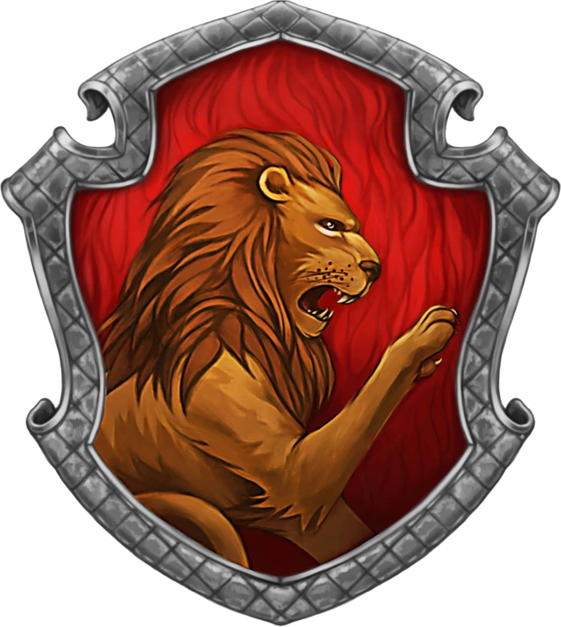
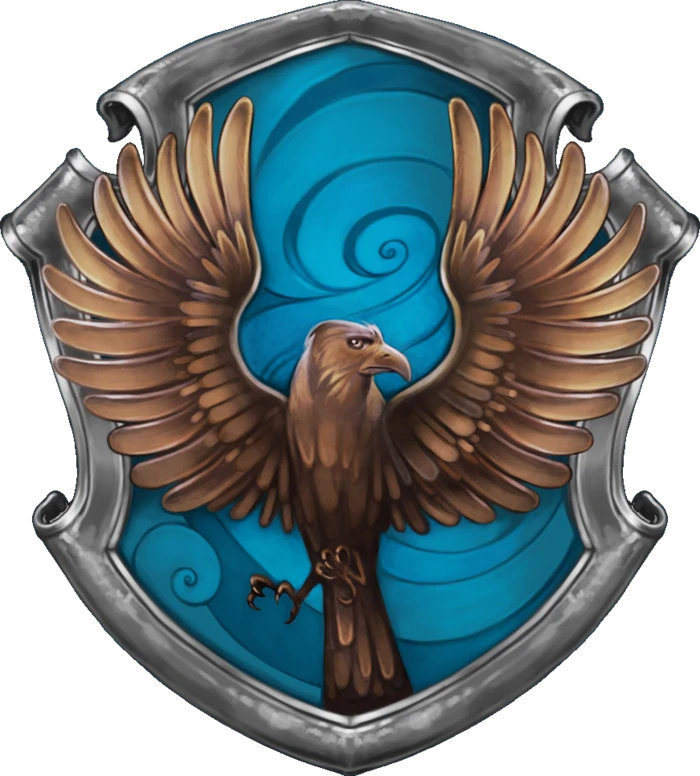
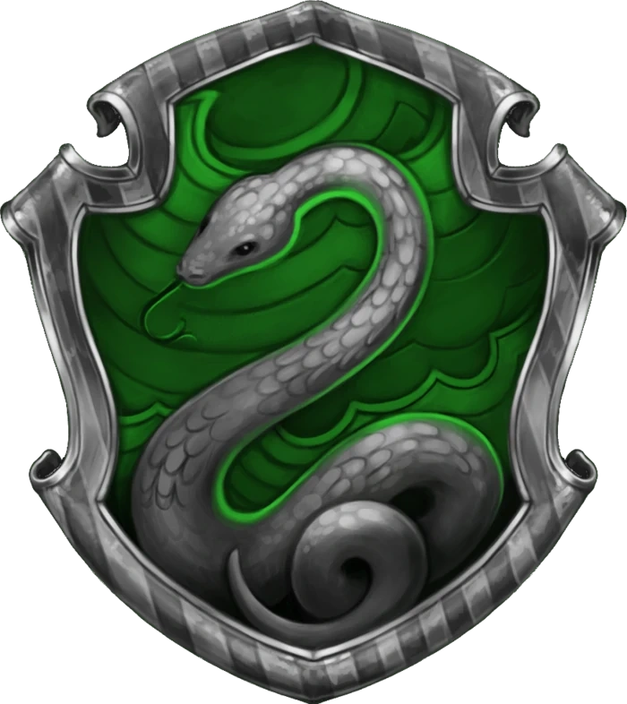

You are a Gryffindor! The house of the brave, loyal, courageous, adventurous, daring, and chivalrous. Those who stand up for others are typically Gryffindors. Brave-hearted is the most well-known Gryffindor characteristic, and Gryffindors are also known for having a lot of nerve. Gryffindors are people who hold a multitude of qualities alongside the ones listed, making them a very well-rounded house. People who are Gryffindors are often people who could fit nicely into another house but choose to tell the sorting hat they want Gryffindor (there's that bravery). "Do what is right" is the motto Gryffindors go by.

You are Ravenclaw! This house is known for their wisdom, intelligence, creativity, cleverness, and knowledge. Those who value brains over brawn can be found here. Ravenclaws often tend to be quite quirky as well. "Do what is wise" is the motto they strive to follow. Though Ravenclaws can be know-it-alls sometimes, they most likely do know what the wisest decision is.

You are a Slytherin! This is the house of the cunning, prideful, resourceful, ambitious, intelligent, and determined. Slytherin's love to be in charge and crave leadership. "Do what is necessary" is the motto of this house. Slytherin house as a whole is not evil, despite how many dark wizards come out of this house. That is merely based on the choices of those wizards (so if your friend is a Slytherin, don't judge, it doesn't mean they are mean people). Slytherins do, however, have a tendency to be arrogant or prideful. This is most likely due to the fact that everyone in Slytherin is exceedingly proud to be there.
You are a Hufflepuff! A Hufflepuff values hard work, dedication, fair play, patience, and loyalty, and are known for being just and true. "Do what is nice" is their motto. Hufflepuff is known as the “nice house" and believes strongly in sparing people's feelings and being kind. This is not to say that you aren't smart or courageous. Hufflepuffs just enjoy making others happy and tend to be more patient toward people.